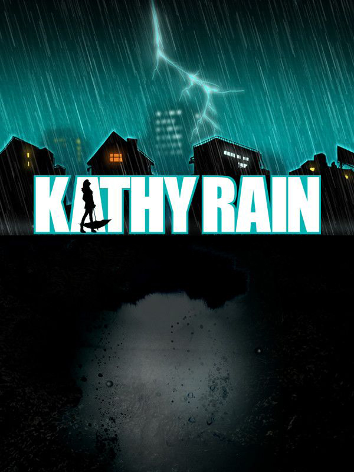

Kathy Rain
Kathy Rain
Details
|  | |
| Playtime | 6h 11m 0s |
| Last Activity | 2019-07-14 22:22:22 |
| Added | 2023-08-11 0:29:07 |
| Modified | 2025-10-02 10:02:35 |
| Completion Status | Completed |
| Library | Steam |
| Source | Steam |
| Platform | Macintosh PC (Windows) |
| Release Date | 2016-05-05 |
| Community Score | 79 |
| Critic Score | 81 |
| User Score | |
| Genre | Adventure Indie Point-and-click Puzzle |
| Developer | Clifftop Games |
| Publisher | Raw Fury |
| Feature | Single Player |
| Links | Official Website Steam GOG App Store (iPhone) App Store (iPad) Twitch Google Play |
| Tag | Adventure Atmospheric Choices Matter Detective Exploration Female Protagonist Hand-drawn Indie Mystery Noir Pixel Graphics Point & Click Psychological Horror Puzzle Retro RPG Singleplayer Story Rich Supernatural Third Person |
Description

Set in the '90s, Kathy Rain tells the story of a strong-willed journalism major who has to come to terms with her own troubled past as she investigates the mysterious death of her recently deceased grandfather. Armed with her motorcycle, a pack of cigs, and a notepad, Kathy begins to delve into a local mystery surrounding her hometown that will take her on a harrowing journey full of emotional and personal turmoil.
As she follows a trail of clues he left behind, questions emerge… What was Joseph Rain really looking for that night all those years ago? What turned him into a mere shell of a man, confined to a wheelchair? What secret did a suicidal young artist take with her to the grave, and why are so many people in Conwell Springs going mad? The truth is dark and sinister…
- 320x240 (4:3) resolution with crisp pixel art graphics
- 4,000+ lines of dialogue
- Full English voice acting directed by Wadjet Eye Games' Dave Gilbert
- Original soundtrack
- 40+ hand-drawn environments
- Compelling narrative with eerie plot set in the '90s